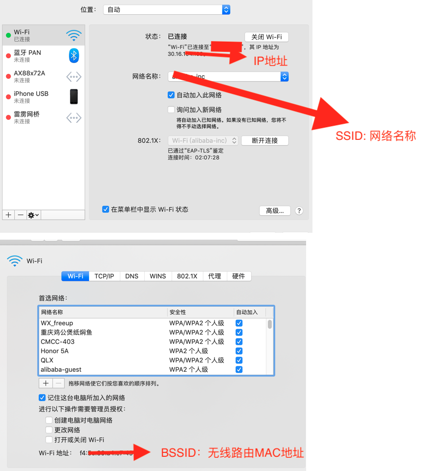
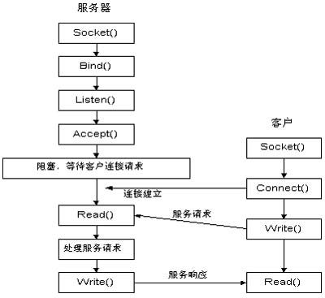
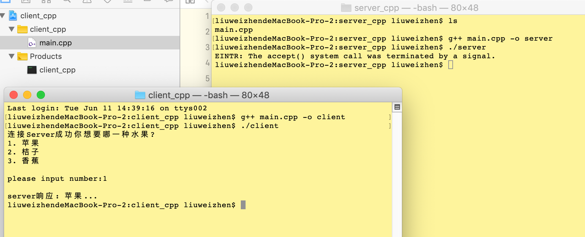

认识Socket
推荐链接：
http://c.biancheng.net/view/2123.html
什么是Socket?
Socket的英文原义是“孔”或“插座”, 在计算机里，网络上的两个程序通过一个双向的通信连接实现数据的交换，这个连接的一端称为一个socket。
在Internet上的主机一般运行了多个服务软件，同时提供几种服务。每种服务都打开一个Socket，并绑定到一个端口上，不同的端口对应于不同的服务。
Socket实质上提供了进程通信的端点。进程通信之前，双方首先必须各自创建一个端点，否则是没有办法建立联系并相互通信的。正如打电话之前，双方必须各自拥有一台电话机一样
Socket套接字有多种形式，但一般是指Internet套接字，根据数据的传输方式，一般可以将 Internet 套接字分成两种类型。通过 socket() 函数创建连接时，必须告诉它使用哪种数据传输方式：
http://c.biancheng.net/view/2124.html
流格式套接字（SOCK_STREAM）
流格式套接字（Stream Sockets）也叫“面向连接的套接字”, 使用TCP 协议，在代码中使用 SOCK_STREAM 表示，SOCK_STREAM 是一种可靠的、双向的通信数据流，数据可以准确无误地到达另一台计算机，如果损坏或丢失，可以重新发送。
SOCK_STREAM 有以下几个特征：
- 数据在传输过程中不会消失；
- 数据是按照顺序传输的；
- 数据的发送和接收不是同步的（有的教程也称“不存在数据边界”）
数据报格式套接字（SOCK_DGRAM）
数据报格式套接字（Datagram Sockets）也叫“无连接的套接字”，使用UDP协议，在代码中使用 SOCK_DGRAM 表示。
计算机只管传输数据，不作数据校验，如果数据在传输中损坏，或者没有到达另一台计算机，是没有办法补救的。也就是说，数据错了就错了，无法重传。
因为数据报套接字所做的校验工作少，所以在传输效率方面比流格式套接字要高。
可以将 SOCK_DGRAM 比喻成高速移动的摩托车快递，它有以下特征：
- 强调快速传输而非传输顺序；
- 传输的数据可能丢失也可能损毁；
- 限制每次传输的数据大小；
- 数据的发送和接收是同步的（有的教程也称“存在数据边界”）。
除了源端口和目的端口，面向连接的套接字还包括序号、确认信号、数据偏移、控制标志（通常说的 URG、ACK、PSH、RST、SYN、FIN）、窗口、校验和、紧急指针、选项等信息；而无连接的套接字则只包含长度和校验和信息

关于Socket的一些原始API的用法，可以参见Linux的man-pages, 可以下载下来：https://www.kernel.org/doc/man-pages/download.html, 也可以在线搜索：http://man.he.net/

接下来仿照http://c.biancheng.net/view/2128.html的代码写一个示例，这个示例包含server端和client, server端监听并等待client的连接，当client发起连接后，server向client询问：
你想要哪一种水果?
- 苹果
- 桔子
- 香蕉
接下来client端输入一个序号，然后server就把相关的水果发送给client.
server源码示例
//
// main.cpp
// server_cpp
//
// Created by liuweizhen on 2019/6/6.
// Copyright © 2019 DaLiu. All rights reserved.
// http://c.biancheng.net/view/2128.html
#include <iostream>
#include <string.h>
#include <stdlib.h>
#include <sys/socket.h>
#include <netinet/in.h>
#include <arpa/inet.h>
#include <unistd.h>
int main(int argc, const char * argv[]) {
/**
创建套接字
名字: socket -- create an endpoint for communication
概要，大纲（synopsis[sɪ'nɑpsɪs]）：
#include <sys/socket.h>
int socket(int domain, int type, int protocol)
描述（description）:
参数domain: AF_INET: internetwork: UDP, TCP, etc. AF_INET6: IPV6
参数type: SOCK_STREAM SOCK_DGRAM SOCK_RAW
参数protocol: 协议
tcp_socket = socket(AF_INET, SOCK_STREAM, 0);
udp_socket = socket(AF_INET, SOCK_DGRAM, 0);
raw_socket = socket(AF_INET, SOCK_RAW, protocol);
*/
int serv_sock = socket(AF_INET, SOCK_STREAM, IPPROTO_TCP);
/**
struct sockaddr_in {
sa_family_t sin_family; // address family: AF_INET 采用的地址，IPv4或IPv6
in_port_t sin_port; // port in network byte order 端口
struct in_addr sin_addr; // internet address IP地址
}
// Internet address
struct in_addr {
uint32_t s_addr; // address in network byte order
};
*/
struct sockaddr_in serv_addr; // 套接字地址
memset(&serv_addr, 0, sizeof(serv_addr)); // 每个字节都用0填充
serv_addr.sin_family = AF_INET; // 使用IPv4地址
serv_addr.sin_addr.s_addr = inet_addr("30.16.104.56"); // IP地址
serv_addr.sin_port = htons(1234); // 端口号
/***
htonl, htons, ntohl, ntohs -- convert values between host and network
byte order
即：htonl, htons, ntohl, ntohs这4个函数转换主机节序和网络的字节序。网络中使用大端big endian, 大字节在前
htonl: Host TO Network Long ==> uint32_t htonl(uint32_t hostlong);
htons: Host To Network Short ==> uint16_t htons(uint16_t hostshort);
ntohl: Network To Host Long ==> uint32_t ntohl(uint32_t netlong);
ntohs: Network To Host Short ==> uint16_t ntohs(uint16_t netshort);
*/
// 将套接字和IP、端口绑定
bind(serv_sock, (const struct sockaddr *)&serv_addr, sizeof(serv_addr));
/**
listen for connections on a socket #include <sys/socket.h>
函数原形：int listen(int sockt, int backlog)
描述：
Creation of socket-based connections requires several operations.
1>. a socket is created with socket.
2>. a willingness to accept incoming connections and a queue limit for incoming connections are specified
with listen().
3>. the connections are accepted with accept.
The listen() call applies only to sockets of type SOCK_STREAM.
*/
listen(serv_sock, 20); // 进入监听状态，等待客户端发起请求
// 接收客户端请求
struct sockaddr_in clnt_addr;
socklen_t clnt_addr_size = sizeof(clnt_addr);
int clnt_sock = accept(serv_sock, (struct sockaddr *)&clnt_addr, &clnt_addr_size);
// The call returns -1 on error and the global variable errno is set to
// indicate the error. If it succeeds, it returns a non-negative integer
// that is a descriptor for the accepted socket.
switch (clnt_sock) { // On success, these system calls return a nonnegative integer that is a descriptor for the accepted socket. 即，如果accept成功，此值应为正数
case -1: {
printf("The call returns -1 on error and the global variable errno is set to indicate the error. \n");
printf("【%d】", errno); // errno: http://man.he.net/?topic=errno§ion=all
break;
}
case EBADF:
printf("EBADF: socket is not a valid file descriptor.\n");
break;
case ECONNABORTED:
printf("ECONNABORTED: The connection to socket has been aborted.\n");
break;
case EFAULT:
printf("EFAULT: The address parameter is not in a writable part of the user address space.\n");
break;
case EINTR:
printf("EINTR: The accept() system call was terminated by a signal.\n");
break;
case EINVAL:
printf("EINVAL: socket is unwilling to accept connections.\n");
break;
case EMFILE:
printf("EMFILE: The per-process descriptor table is full.\n");
break;
case ENFILE:
printf("ENFILE: The system file table is full.\n");
break;
case ENOMEM:
printf("ENOMEM: Insufficient memory was available to complete the operation.\n");
break;
case ENOTSOCK:
printf("ENOTSOCK: socket references a file type other than a socket.\n");
break;
case EOPNOTSUPP:
printf("EOPNOTSUPP: socket is not of type SOCK_STREAM and thus does not accept connections.\n");
break;
case EWOULDBLOCK:
printf("EWOULDBLOCK: socket is marked as non-blocking and no connections are present to be accepted.\n");
break;
default:
break;
}
char str[] = "你想要哪一种水果?\n1. 苹果 \n2. 桔子\n3. 香蕉\n";
write(clnt_sock, str, sizeof(str)); // 发送给客户端
int buffer;
read(clnt_sock, (void *)&buffer, sizeof(buffer));
switch (buffer) {
case 1: {
char fruits[100] = "苹果...";
write(clnt_sock, (const void *)fruits, sizeof(fruits));
break;
}
case 2: {
char fruits[100] = "桔子...";
write(clnt_sock, (const void *)fruits, sizeof(fruits));
break;
}
case 3: {
char fruits[100] = "香蕉...";
write(clnt_sock, (const void *)fruits, sizeof(fruits));
break;
}
default:
break;
}
/** 另一次连结
int clnt_sock2 = accept(serv_sock, (struct sockaddr *)&clnt_addr, &clnt_addr_size);
if (clnt_sock2 == -1) {
std::cout << "failure for accept" << std::endl;
}
*/
// 关闭套接字
close(clnt_sock);
close(serv_sock);
return 0;
}
client源码示例
#include <stdio.h>
#include <string.h>
#include <stdlib.h>
#include <unistd.h>
#include <arpa/inet.h>
#include <sys/socket.h>
int main(int argc, const char * argv[]) {
// 创建套接字
int sock = socket(AF_INET, SOCK_STREAM, 0);
// 向服务器（特定的IP和端口）发起请求
struct sockaddr_in serv_addr;
memset(&serv_addr, 0, sizeof(serv_addr)); // 每个字节都用0填充
serv_addr.sin_family = AF_INET; // 使用IPv4地址
serv_addr.sin_addr.s_addr = inet_addr("30.16.104.56"); // 具体的IP地址
serv_addr.sin_port = htons(1234); // 端口
int flag = connect(sock, (struct sockaddr*)&serv_addr, sizeof(serv_addr));
if (0 == flag) {
printf("连接Server成功");
}
else {
printf("连接Server失败");
return 0;
}
// 读取服务器传回的数据
char buffer[180];
read(sock, buffer, 300); // read 方法：http://www.man7.org/linux/man-pages/man2/read.2.html
printf("%s\n", buffer);
int input_num;
printf("please input number:");
scanf("%d", &input_num);
// printf("get input number: %d - %lu", input_num, sizeof(input_num));
write(sock, (const void *)&input_num, sizeof(input_num)); // write to server
char buffer2[200];
read(sock, buffer2, sizeof(buffer2));
printf("\nserver响应: %s\n", buffer2);
// 关闭套接字
close(sock);
return 0;
}
先运行server：
g++ main.cpp -o server
./server
再运行client：
g++ main.cpp -o client
./client

此Demo源码在这里
相关链接：